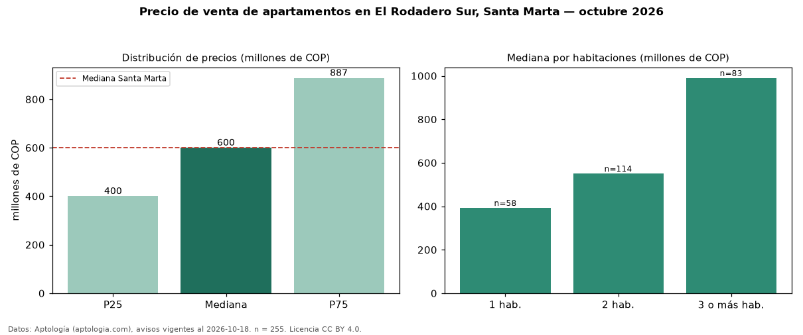

Precio de venta de apartamentos en El Rodadero Sur, Santa Marta — octubre 2026
COP 600 millones es el precio mediano de apartamentos en venta en Rodadero Sur, Santa Marta (n = 255 avisos). Prácticamente coincide con la mediana de Santa Marta para apartamentos (COP 600 millones). Por metro cuadrado, la mediana es COP 7,59 millones/m² (n = 252 avisos con área), 13 % por debajo de Santa Marta (COP 8,72 millones/m²). Con el precio por m² de arriendo del mismo segmento (COP 43.820/m² al mes), la rentabilidad bruta implícita es 6,9 % anual (aproximación con medianas de ofertas distintas). El área mediana anunciada es 75 m². El segmento con más oferta es el de 2 habitaciones (114 avisos, mediana COP 550 millones); pasar de 1 habitación a 3 o más habitaciones cambia la mediana +152 %. La administración mediana declarada es COP 540.000 al mes (n = 210). La mitad central de los avisos va de COP 400 millones a COP 887 millones (razón 2,2), una dispersión alta. Datos: Aptología (aptologia.com), CC BY 4.0 — https://www.aptologia.com/venta/santa-marta/el-rodadero-sur. Archivos: PDF, CSV con las cifras y gráfica PNG.

| Avisos únicos | 255 |
|---|---|
| Percentil 25 | COP 400.000.000 |
| Mediana | COP 600.000.000 |
| Percentil 75 | COP 887.450.000 |
| Mediana por m² | COP 7.590.062 |
Fuente: avisos vigentes de portales inmobiliarios recopilados por Aptología, deduplicados (mínimo 30 avisos únicos por celda). Precios pedidos, no cerrados. Fecha: 2026-10-18.